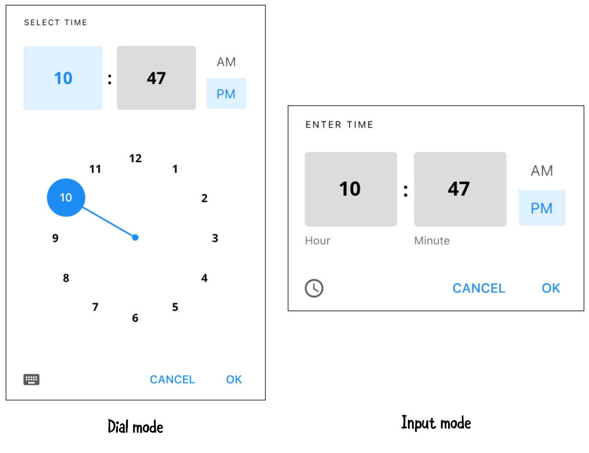
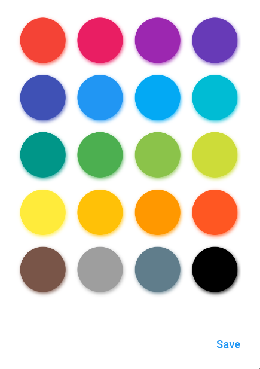

6 Interactive Widgets¶
In the previous chapter, you learned how to capture lots of data with scrollable widgets. But how do you make an app more engaging? How do you collect input and feedback from your users?
In this chapter, you’ll explore interactive widgets. In particular, you’ll learn to create:
- Gesture-based widgets
- Time and date picker widgets
- Input and selection widgets
- Dismissable widgets
You’ll continue to work on Fooderlich, building the final tab: To Buy. This tab allows the user to create a grocery list of items to buy, make modifications to them, and check them off their TODO list when they’re done. They’ll be able to add, remove and update the items in the list.
You’ll also get a quick introduction to Provider, a package that helps you manage state and notify components that there’s updated data to display.
You’ll start by building an empty screen. If there are no grocery items available, the user has two options:
- Click Browse Recipes to view other recipes.
- Click the + button to add a new grocery item.
When the user taps the + button, the app will present a screen for the user to create an item:
The screen consists of the following data attributes:
- The name of the item.
- A tag that shows the item’s importance level.
- The date and time when you want to buy this item.
- The color you want to label this item.
- The quantity of the item.
Also, when you create the item, the app will show a preview of the item itself! How cool is that?
When you create your first item, the grocery list replaces the empty screen:

The user will be able to take four actions on this new screen:
- Tap a grocery item to update some information.
- Tap the checkbox to mark an item as complete.
- Swipe away the item to delete it.
- Create and add another item to the list.
By the end of this chapter, you’ll have built a functional TODO list for users to manage their grocery items. You’ll even add light and dark mode support!
It’s time to get started.
Getting started¶
Open the starter project in Android Studio and run flutter pub get, if necessary. Then, run the app.
You’ll see the Fooderlich app from the previous chapter. When you tap the To Buy tab, you’ll see a blue screen. Don’t worry, soon you’ll add an image so your users won’t think there’s a problem.
Inside assets/fooderlich_assets, you’ll find a new image.
You’ll display empty_list.png when there aren’t any items in the list.

Now, it’s time to add some code!
Creating the grocery item model¶
First, you’ll set up the model for the information you want to save about the items. In the modelsdirectory, create a new file called grocery_item.dart, then add the following code:
import 'package:flutter/painting.dart';
// 1
enum Importance {
low,
medium,
high,
}
class GroceryItem {
// 2
final String id;
// 3
final String name;
final Importance importance;
final Color color;
final int quantity;
final DateTime date;
final bool isComplete;
GroceryItem({
required this.id,
required this.name,
required this.importance,
required this.color,
required this.quantity,
required this.date,
this.isComplete = false,
});
// 4
GroceryItem copyWith({
String? id,
String? name,
Importance? importance,
Color? color,
int? quantity,
DateTime? date,
bool? isComplete,
}) {
return GroceryItem(
id: id ?? this.id,
name: name ?? this.name,
importance: importance ?? this.importance,
color: color ?? this.color,
quantity: quantity ?? this.quantity,
date: date ?? this.date,
isComplete: isComplete ?? this.isComplete);
}
}
Take a moment to explore what grocery_item.dart contains:
Importanceis an enum that you’ll use to tag the importance of an item: low, medium or high.- Each
GroceryItemmust have a uniqueidto differentiate the items from one other. - A user can set the name, level of importance, color label, quantity and date, as well as marking completed items.
copyWithcopies and creates a completely new instance ofGroceryItem. This will be useful later, when you manage the state of the items.
Next, you need to add this new code to the barrel file.
Open the models/models.dart barrel file and add the following:
export 'grocery_item.dart';
Note: Remember that the purpose of a barrel file is to group common Dart files together. This allows you to group classes that are commonly used together so you only have to import a single file — in this case, models.dart.
Creating the Grocery screen¶
Now that you’ve set up your model, it’s time to create the Grocery screen. This screen will display one of two views:
EmptyGroceryScreen will display when there are no items. After the user adds at least one item, you’ll display GroceryListScreen instead.
Building GroceryScreen¶
The first thing you need to do is create GroceryScreen, which determines whether to display the empty or list screen.
Within the screens directory, create a new Dart file called grocery_screen.dart. Then, add the following code:
import 'package:flutter/material.dart';
class GroceryScreen extends StatelessWidget {
const GroceryScreen({super.key});
@override
Widget build(BuildContext context) {
// TODO: Replace with EmptyGroceryScreen
return Container(color: Colors.green);
}
// TODO: Add buildGroceryScreen
}
For now, this will just show a green screen. You’ll replace this with something more informative later.
Displaying the Grocery screen¶
Your next task is to give your users a way to see the new page — when it’s ready, that is. When you click on the To Buy tab, it needs to show GroceryScreen, not the solid color.
Do this by opening home.dart and adding the following import:
import 'screens/grocery_screen.dart';
Then, locate // TODO: Replace with grocery screen and replace Container with the following:
const GroceryScreen(),
This substitutes the existing empty container with the new screen.
With the app running, perform a hot restart, then tap the To Buy tab. You’ll now see a green screen instead of a blue one.
Great! That’s progress, right? Well, it’ll get better after you create the screens. You’ll start doing that now, with the Grocery screen that will display when the list is empty.
Creating the empty Grocery screen¶
Within the screens directory, create a new Dart file called empty_grocery_screen.dart and add the following:
import 'package:flutter/material.dart';
class EmptyGroceryScreen extends StatelessWidget {
const EmptyGroceryScreen({super.key});
@override
Widget build(BuildContext context) {
// TODO: Replace and add layout widgets
return Container(color: Colors.purple);
}
}
This is the first simple implementation of EmptyGroceryScreen. You’ll replace the placeholder Container with other widgets soon.
Adding the empty screen¶
Before you continue building EmptyGroceryScreen, you need to set up the widget for hot reload so you can see your updates live.
Open grocery_screen.dart and add the following import:
import 'empty_grocery_screen.dart';
Locate // TODO: Replace with EmptyGroceryScreen and replace the whole returnstatement beneath it with:
// TODO: Add a scaffold widget
return const EmptyGroceryScreen();
Now, you’ll see the following purple screen:
Great! Now, you’ll be able to see your changes live after you code them.
Adding layout widgets¶
Next, you’ll lay the foundation for the final look of the page by adding widgets that handle the layout of the empty Grocery screen.
Open empty_grocery_screen.dart and locate // TODO: Replace and add layout widgets. Replace it and the line below it with the following:
// 1
return Padding(
padding: const EdgeInsets.all(30.0),
// 2
child: Center(
// 3
child: Column(
mainAxisAlignment: MainAxisAlignment.center,
children: [
// TODO: Add empty image
// TODO: Add empty screen title
// TODO: Add empty screen subtitle
// TODO: Add browse recipes button
],
),
),
);
Here’s what you’ve added:
- Padding: Adds 30 pixels on all sides.
- Center: Places all the other widgets in the center.
- Column: Handles the vertical layouts of the other widgets.
The app will now look like this:
Now, it’s time to make your screen more interesting!
Adding the visual pieces¶
Finally, it’s time to go beyond a colorful screen and add some text and images.
Still in empty_grocery_screen.dart, locate // TODO: Add empty image and replace it with the following:
// 1
Flexible(
// 2
child: AspectRatio(
aspectRatio: 1 / 1,
child: Image.asset('assets/fooderlich_assets/empty_list.png'),
),
),
Here’s how the code works:
- Flexible gives a child the ability to fill the available space in the main axis.
- AspectRatio sizes its child to the specified
aspectRatio. AlthoughaspectRatiois a double, the Flutter documentation recommends writing it aswidth / heightinstead of the calculated result. In this case, you want a square aspect ratio of1 / 1and not1.0.
Note: Dart does the calculation for you to provide the double. What if you’d wanted a 16:9 ratio? You’d put
16 / 9and not1.5.
Next, replace // TODO: Add empty screen title with the following:
Text(
'No Groceries',
style: Theme.of(context).textTheme.headline6,
),
Here, you added a title using Text, placed below the image.
Next, locate // TODO: Add empty screen subtitle and replace it with the following:
const SizedBox(height: 16.0),
const Text(
'Shopping for ingredients?\n'
'Tap the + button to write them down!',
textAlign: TextAlign.center,
),
As you just did with the title, you’ve added a subtitle with a 16-pixel box between it and the title above.
Finally, replace // TODO: Add browse recipes button with the following:
MaterialButton(
textColor: Colors.white,
shape: RoundedRectangleBorder(
borderRadius: BorderRadius.circular(30.0),
),
color: Colors.green,
onPressed: () {
// TODO: Go to Recipes Tab
},
child: const Text('Browse Recipes'),
),
Now, you’ve added a rounded green MaterialButton.
Note: There are many other styles of buttons you can choose from! See https://flutter.dev/docs/development/ui/widgets/material#Buttons for more options.
Now, check out your app. It will look like this:

Great! Now, users will know that their grocery list is empty. Next, you’ll add a handler so that tapping the Browse Recipes button brings you to the Recipes tab.
Switching tabs¶
You have two options to implement switching to the Recipes tab:
- Standard callback: Pass a callback from the parent widget all the way down the widget tree to a descendant widget. When ready, it fires the callback at each level up the tree and calls
setState()to rebuild theHomewidget’s subtree.
This approach is OK for small projects, but as your project gets larger, it becomes annoying and complicated. Imagine having to pass a callback at every level of the widget tree. It’s hard to maintain and excessively couples your widgets to one another.
- Provider: Wraps around inherited widgets. This package allows you to provide data and state information to descendant widgets.
This approach is better. It allows descendant widgets in the subtree to access state information.
Instead of callbacks, you just wrap Consumers around your widgets. Every time a state changes, those Consumers rebuild the subtree below it.
It’s Provider time!
Provider overview¶
Provider is a convenient way to pass state down the widget tree and rebuild your UI when changes occur. You’ll add it to your project next.
Before you do that, however, you need to understand four concepts:
ChangeNotifieris extended by a class to provide change notifications to its listeners.ChangeNotifierProviderlistens for changes to aChangeNotifier. Widgets below it can access the state object and listen to state changes.Consumerwraps around part of a widget tree. It rebuilds part of a subtree when the state it listens to changes.Provider.ofallows descendant widgets to access the state object. If you only need access to the state object and don’t need to listen for changes, use this!
Note: This is a quick overview of how Provider works. You’ll learn more about using Provider for state management in Chapter 13, “Managing State”.
Adding Provider¶
Open pubspec.yaml and add the following package under dependencies beneath google_fonts:
provider: ^6.0.3
Save the file and run flutter pub get.
Creating a tab manager¶
In the models directory, create a new file called tab_manager.dart and add the following code:
import 'package:flutter/material.dart';
// 1
class TabManager extends ChangeNotifier {
// 2
int selectedTab = 0;
// 3
void goToTab(index) {
// 4
selectedTab = index;
// 5
notifyListeners();
}
// 6
void goToRecipes() {
selectedTab = 1;
// 7
notifyListeners();
}
}
TabManager manages the tab index that the user taps. This code does the following:
TabManagerextendsChangeNotifier. This allows the object to provide change notifications to its listeners.selectedTabkeeps track of which tab the user tapped.goToTab()is a simple function that modifies the current tab index.- Stores the index of the new tab the user tapped.
- Calls
notifyListeners()to notify all widgets listening to this state. goToRecipes()is a specific function that setsselectedTabto the Recipes tab, which is at index 1.- Notifies all widgets listening to
TabManagerthat Recipes is the selected tab.
Next, add TabManager to models.dart:
export 'tab_manager.dart';
Awesome! Now, you have a simple tab manager to manage the current tab index. It’s time to provide this to your widgets.
Managing tab state¶
So how will you use Provider? Here’s a blueprint:
These are the steps you’ll take:
- Provide the
TabManagerchange notifier at the root level ofFooderlich. This allows descendant widgets to access the tab manager. - Wrap a
ConsumeraroundHome. This ensures thatHomedisplays the right screen anytimeTabManager’s tab index changes. - Since
Provideris a wrapper around inherited widgets,EmptyGroceryScreencan access theTabManagerstate object through itscontext. goToRecipes()changes the tab index, notifyingConsumer, which then rebuildsHomewith the correct tab to display.
Sounds easy, right? Well, then, it’s time to jump in.
Providing TabManager¶
First, you need to provide TabManager at Fooderlich’s top level to let descendant widgets access the state object.
Open main.dart and add the following imports:
import 'package:provider/provider.dart';
import 'models/models.dart';
Then, locate and replace // TODO: Replace this with MultiProvider and the homedefinition with the following:
// 1
home: MultiProvider(
providers: [
// 2
ChangeNotifierProvider(create: (context) => TabManager()),
// TODO: Add GroceryManager Provider
],
child: const Home(),
),
Here’s how the code works:
- You assign
MultiProvideras a property ofHome. This accepts a list of providers forHome’s descendant widgets to access. ChangeNotifierProvidercreates an instance ofTabManager, which listens to tab index changes and notifies its listeners.
Note: Use
MultiProviderwhen you need to provide more than oneProviderto a widget tree. Later, you’ll also add aGroceryManagerstate object to manage the list of items.
Adding a TabManager consumer¶
Now, it’s time to set up the consumer so the app can listen to changes broadcast by TabManager.
Open home.dart and add the following imports:
import 'package:provider/provider.dart';
import 'models/models.dart';
Next, locate // TODO: Wrap inside a Consumer Widget and replace it and the whole body of build() with the following:
// 1
return Consumer<TabManager>(builder: (context, tabManager, child) {
return Scaffold(
appBar: AppBar(
title: Text(
'Fooderlich',
style: Theme.of(context).textTheme.headline6,
),
),
// 2
// TODO: Replace body
body: pages[tabManager.selectedTab],
bottomNavigationBar: BottomNavigationBar(
selectedItemColor: Theme.of(context)
.textSelectionTheme.selectionColor,
// 3
currentIndex: tabManager.selectedTab,
onTap: (index) {
// 4
tabManager.goToTab(index);
},
items: const [
BottomNavigationBarItem(
icon: Icon(Icons.explore),
label: 'Explore',
),
BottomNavigationBarItem(
icon: Icon(Icons.book),
label: 'Recipes',
),
BottomNavigationBarItem(
icon: Icon(Icons.list),
label: 'To Buy',
),
],
),
);
}
);
Here’s how the code works:
- Wraps all the widgets inside
Consumer. WhenTabManagerchanges, the widgets below it will rebuild. - Displays the correct page widget, based on the current tab index.
- Sets the current index of
BottomNavigationBar. - Calls
manager.goToTab()when the user taps a different tab, to notify other widgets that the index changed.
Now, since you’ve added Consumer<TabManager>, you no longer need _onItemTapped(). Locate the method and delete it, as well as the int _selectedIndex = 0; declaration.
Switching to the Recipes tab¶
There’s one last step to implement the ability to switch between tabs.
Open empty_grocery_screen.dart and add the following imports:
import 'package:provider/provider.dart';
import '../models/models.dart';
Then, locate // TODO: Go to Recipes Tab and replace it with the following:
Provider.of<TabManager>(context, listen: false).goToRecipes();
Here, you use Provider.of() to access the model object, TabManager. goToRecipes()sets the index to the Recipes tab. This notifies Consumer to rebuild Home with the right tab index.
On the To Buy tab, tap the Browse Recipes button. It will now navigate to the recipes screen.

Great! Now it’s time to create some grocery items.
Managing the grocery items¶
Before you display or create grocery items, you need a way to manage them.
In the models directory, create a new file called grocery_manager.dart. Add the following:
import 'package:flutter/material.dart';
import 'grocery_item.dart';
class GroceryManager extends ChangeNotifier {
// 1
final _groceryItems = <GroceryItem>[];
// 2
List<GroceryItem> get groceryItems => List.unmodifiable(_groceryItems);
// 3
void deleteItem(int index) {
_groceryItems.removeAt(index);
notifyListeners();
}
// 4
void addItem(GroceryItem item) {
_groceryItems.add(item);
notifyListeners();
}
// 5
void updateItem(GroceryItem item, int index) {
_groceryItems[index] = item;
notifyListeners();
}
// 6
void completeItem(int index, bool change) {
final item = _groceryItems[index];
_groceryItems[index] = item.copyWith(isComplete: change);
notifyListeners();
}
}
GroceryManager extends ChangeNotifier to notify its listeners about state changes. Here’s how GroceryManager works:
- This manager holds a private array of
_groceryItems. Only the manager can change and update grocery items. - Provides a public getter method for
groceryItems, which is unmodifiable. External entities can only read the list of grocery items. deleteItem()deletes an item at a particular index.addItem()adds a new grocery item at the end of the list.updateItem()replaces the old item at a given index with a new item.completeItem()toggles theisCompleteflag on and off.
Each of these methods calls notifyListeners(). This notifies widgets of changes to GroceryManager that require a rebuild.
Next, open the barrel file, models.dart, and add the following:
export 'grocery_manager.dart';
This lets other classes use the new manager.
Adding GroceryManager as a provider¶
Much like you did with TabManager you‘ll now add GroceryManager as a provider.
In main.dart replace // TODO: Add GroceryManager Provider with:
ChangeNotifierProvider(create: (context) => GroceryManager()),
All descendant widgets of Fooderlich can now listen to or access GroceryManager!
Consuming the changes¶
How does the To Buy screen react to changes in the grocery list? So far, it doesn’t, but you’re now ready to hook up the new manager with the view that displays grocery items. :]
Add the following imports to grocery_screen.dart.
import 'package:provider/provider.dart';
import '../models/models.dart';
Find // TODO: Add buildGroceryScreen and replace it with the following code:
Widget buildGroceryScreen() {
// 1
return Consumer<GroceryManager>(
// 2
builder: (context, manager, child) {
// 3
if (manager.groceryItems.isNotEmpty) {
// TODO: Add GroceryListScreen
return Container();
} else {
// 4
return const EmptyGroceryScreen();
}
},
);
}
buildGroceryScreen() is a helper function that decides which widget tree to construct. Here’s how it works:
- You wrap your widgets inside a
Consumer, which listens forGroceryManagerstate changes. Consumerrebuilds the widgets below itself when the grocery manager items changes.- If there are grocery items in the list, show the
GroceryListScreen. You will create this screen soon. - If there are no grocery items, show the
EmptyGroceryScreen.
Tip: You should only wrap a
Consumeraround widgets that need it. For example, wrapping a consumer widget at the top level would force it to rebuild the entire tree!
Next, locate // TODO: add a scaffold widget and replace the line below it with the following:
// 5
return Scaffold(
// 6
floatingActionButton: FloatingActionButton(
child: const Icon(Icons.add),
onPressed: () {
// TODO: Present GroceryItemScreen
},
),
// 7
body: buildGroceryScreen(),
);
Here’s how the code works:
- The main layout structure for
GroceryScreenis a scaffold. - Adds a floating action button with a + icon. Tapping the button presents the screen to create or add an item. You’ll build this screen later.
- Builds the rest of the Grocery screen’s subtree. That’s coming up next!
GroceryScreen is all set up to switch between the empty and list screens. Now, it’s time to create grocery items!
Adding new packages¶
Before going any further, you need to add three new packages. Open pubspec.yaml and under dependencies add the following under provider.
flutter_colorpicker: ^1.0.3
intl: ^0.17.0
uuid: ^3.0.6
Here’s what each of them does:
- flutter_colorpicker: Provides a material color picker for your app.
- intl: Provides internationalization and localization utilities. You’ll use this to format dates.
- uuid: Generates unique keys for each grocery item. This helps you know which item to add, update or remove.
Don’t forget to run flutter pub get after updating pubspec.yaml entries.
The next screen you’ll create is GroceryItemScreen, which gives users a way to edit or create new grocery items.
Creating the screen to add grocery items¶
In the screens directory, create a new file called grocery_item_screen.dart and add the following:
import 'package:flutter/material.dart';
import 'package:google_fonts/google_fonts.dart';
import 'package:flutter_colorpicker/flutter_colorpicker.dart';
import 'package:intl/intl.dart';
import 'package:uuid/uuid.dart';
import '../models/models.dart';
class GroceryItemScreen extends StatefulWidget {
// 1
final Function(GroceryItem) onCreate;
// 2
final Function(GroceryItem) onUpdate;
// 3
final GroceryItem? originalItem;
// 4
final bool isUpdating;
const GroceryItemScreen({
super.key,
required this.onCreate,
required this.onUpdate,
this.originalItem,
}) : isUpdating = (originalItem != null);
@override
GroceryItemScreenState createState() => GroceryItemScreenState();
}
class GroceryItemScreenState extends State<GroceryItemScreen> {
// TODO: Add grocery item screen state properties
@override
Widget build(BuildContext context) {
// TODO: Add GroceryItemScreen Scaffold
return Container(color: Colors.orange);
}
// TODO: Add buildNameField()
// TODO: Add buildImportanceField()
// TODO: ADD buildDateField()
// TODO: Add buildTimeField()
// TODO: Add buildColorPicker()
// TODO: Add buildQuantityField()
}
Take a moment to understand the properties you added:
onCreateis a callback that lets you know when a new item is created.onUpdateis a callback that returns the updated grocery item.- The grocery item that the user clicked.
isUpdatingdetermines whether the user is creating or editing an item.
Before you continue building GroceryItemScreen, you need to present this widget.
Presenting GroceryItemScreen¶
Open grocery_screen.dart and add the following import:
import 'grocery_item_screen.dart';
Then, locate //TODO: Present GroceryItemScreen and replace it with the following code:
// 1
final manager = Provider.of<GroceryManager>(
context,
listen: false);
// 2
Navigator.push(
context,
// 3
MaterialPageRoute(
// 4
builder: (context) => GroceryItemScreen(
// 5
onCreate: (item) {
// 6
manager.addItem(item);
// 7
Navigator.pop(context);
},
// 8
onUpdate: (item) {},
),
),
);
Here’s how the code works:
- Returns the
GroceryManageravailable in the tree. Navigator.push()adds a new route to the stack of routes.MaterialPageRoutereplaces the entire screen with a platform-specific transition. In Android, for example, it slides upwards and fades in. In iOS, it slides in from the right.- Creates a new
GroceryItemScreenwithin the route’s builder callback. onCreatedefines what to do with the created item.addItem()adds this new item to the list of items.- Once the item is added to the list,
pop()removes the top navigation route item,GroceryItemScreen, to show the list of grocery items. onUpdatewill never get called since you are creating a new item.
Note: For now, you just need to know that
Navigator.push()presents a new screen andNavigator.popremoves it again. You’ll dive deeper intoNavigatorin the next chapter.
Tap the + button on your running app and you’ll see the following:
Onwards!
Adding GroceryItemScreen’s state properties¶
Now, it’s time to give the grocery items some properties to make them more useful.
Return to grocery_item_screen.dart and locating // TODO: Add grocery item screen state properties. Replace it with the following:
final _nameController = TextEditingController();
String _name = '';
Importance _importance = Importance.low;
DateTime _dueDate = DateTime.now();
TimeOfDay _timeOfDay = TimeOfDay.now();
Color _currentColor = Colors.green;
int _currentSliderValue = 0;
// TODO: Add initState()
// TODO: Add dispose()
Ignore any tan squiggles — these will go away as you add more code.
_GroceryItemScreenState manages six different values:
_nameControlleris aTextEditingController. This controller listens for text changes. It controls the value displayed in a text field._namestores the name of the item._importancestores the importance level._dueDatestores the current date and time._timeOfDaystores the current time._currentColorstores the color label._currentSliderValuestores the quantity of an item.
These properties will create the final GroceryItem.
Next, within _GroceryItemScreenState, find // TODO: Add initState() and replace it with:
@override
void initState() {
super.initState();
// 1
final originalItem = widget.originalItem;
if (originalItem != null) {
_nameController.text = originalItem.name;
_name = originalItem.name;
_currentSliderValue = originalItem.quantity;
_importance = originalItem.importance;
_currentColor = originalItem.color;
final date = originalItem.date;
_timeOfDay = TimeOfDay(hour: date.hour, minute: date.minute,);
_dueDate = date;
}
// 2
_nameController.addListener(() {
setState(() {
_name = _nameController.text;
});
});
}
Before a widget builds, initState() initializes its properties before use.
- When the
originalItemis not null, the user is editing an existing item. In this case, you must configure the widget to show the item’s values. - Adds a listener to listen for text field changes. When the text changes, you set the
_name.
This newly added code made those tan squiggles disappear. :]
Soon, you’ll add some layout widgets to align the items properly on the screen. However, before you do, you have a bit more code to add to clean everything up.
Finally, replace // TODO: Add dispose() with the following:
@override
void dispose() {
_nameController.dispose();
super.dispose();
}
This will dispose your TextEditingController when you no longer need it.
Now that you’ve completed your configuration and cleaned it up, it’s time to add some layout widgets!
Adding GroceryItemScreen’s layout widgets¶
Still in grocery_item_screen.dart, locate // TODO: Add GroceryItemScreen Scaffold and replace the line below it with the following:
// 1
return Scaffold(
// 2
appBar: AppBar(
actions: [
IconButton(
icon: const Icon(Icons.check),
onPressed: () {
// TODO: Add callback handler
},)
],
// 3
elevation: 0.0,
// 4
title: Text(
'Grocery Item',
style: GoogleFonts.lato(fontWeight: FontWeight.w600),
),
),
// 5
body: Container(
padding: const EdgeInsets.all(16.0),
child: ListView(
children: [
// TODO: Add name TextField
// TODO: Add Importance selection
// TODO: Add date picker
// TODO: Add time picker
// TODO: Add color picker
// TODO: Add slider
// TODO: Add Grocery Tile
],
),
),
);
Here’s how the code works:
Scaffolddefines the main layout and structure of the entire screen.- Includes an app bar with one action button. The user will tap this button when they’ve finished creating an item.
- Sets elevation to
0.0, removing the shadow under the app bar. - Sets the title of the app bar.
- Shows a
ListView, padded by 16 pixels on every side, within the body of the scaffold. You’ll fill this list view with a bunch of interactive widgets soon.
Your screen now looks like this:
It’s a bit bare, but not for long. Now that you have the main layout structure, it’s time to add interactive widgets!
Adding the text field to enter a grocery name¶
The first input widget you’ll create is a TextField, which is a helpful widget when you need the user to enter some text. In this case, it will capture the name of the grocery item.
There are two ways to listen for text changes. You can either:
- Implement an
onChangedcallback handler. - Supply
TextEditingControllertoTextFieldand add a listener for text changes. This approach allows more fine-grained control over your text field, such as changing the text field’s value based on a certain logic.
You’ll use the second approach. TextEditingController allows you to set the initial value.
Note: You can find more information about text fields here: https://flutter.dev/docs/cookbook/forms/text-field-changes
Still in grocery_item_screen.dart, find and replace // TODO: Add buildNameField() with the following code:
Widget buildNameField() {
// 1
return Column(
// 2
crossAxisAlignment: CrossAxisAlignment.start,
children: [
// 3
Text(
'Item Name',
style: GoogleFonts.lato(fontSize: 28.0),
),
// 4
TextField(
// 5
controller: _nameController,
// 6
cursorColor: _currentColor,
// 7
decoration: InputDecoration(
// 8
hintText: 'E.g. Apples, Banana, 1 Bag of salt',
// 9
enabledBorder: const UnderlineInputBorder(
borderSide: BorderSide(color: Colors.white),
),
focusedBorder: UnderlineInputBorder(
borderSide: BorderSide(color: _currentColor),
),
border: UnderlineInputBorder(
borderSide: BorderSide(color: _currentColor),
),
),
),
],
);
}
Here’s what’s happening above:
- Creates a
Columnto lay elements out vertically. - Aligns all widgets in the column to the left.
- Adds a
Textthat’s styled usingGoogleFonts. - Adds a
TextFieldto enter the name of the item. - Sets the
TextField’sTextEditingController. - Sets the cursor color.
- Styles the text field using
InputDecoration. - Includes a hint to give users an example of what to write.
- Customizes the text field’s border color.
Next, locate // TODO: Add name TextField and replace it with:
buildNameField(),
Run the app, tap in the new text box and it will look like this:
On to the next input widget!
Building the importance widget¶
Your next step is to let the users choose how important a grocery item is. You’ll do this using a Chip. This widget represents information about an entity. You can present a collection of chips for the user to select.
Understanding chips¶
There are four different types of chip widgets:
Image from: https://material.io/components/chips/flutter#types
- InputChip: Converts input into chips. An example would be user preference UI flows, such as asking the types of new media they like.
- ChoiceChip: Allows the user to make a single selection given a set of options.
- FilterChip: Allows the user to select multiple answers given a set of options.
- ActionChip: A button that’s styled like a chip.
Note: For more information about chips, check out: https://material.io/components/chips/flutter#types
Here, you’ll use a ChoiceChip to let users choose the importance level of a grocery item.
Continuing in grocery_item_screen.dart, replace // TODO: buildImportanceField() with:
Widget buildImportanceField() {
// 1
return Column(
crossAxisAlignment: CrossAxisAlignment.start,
children: [
// 2
Text(
'Importance',
style: GoogleFonts.lato(fontSize: 28.0),
),
// 3
Wrap(
spacing: 10.0,
children: [
// 4
ChoiceChip(
// 5
selectedColor: Colors.black,
// 6
selected: _importance == Importance.low,
label: const Text(
'low',
style: TextStyle(color: Colors.white),
),
// 7
onSelected: (selected) {
setState(() => _importance = Importance.low);
},
),
ChoiceChip(
selectedColor: Colors.black,
selected: _importance == Importance.medium,
label: const Text(
'medium',
style: TextStyle(color: Colors.white),
),
onSelected: (selected) {
setState(() => _importance = Importance.medium);
},
),
ChoiceChip(
selectedColor: Colors.black,
selected: _importance == Importance.high,
label: const Text(
'high',
style: TextStyle(color: Colors.white),
),
onSelected: (selected) {
setState(() => _importance = Importance.high);
},
),
],
)
],
);
}
In the code above, you:
- Use a
Columnto lay out the widgets vertically. - Add
Text. - Add
Wrapand space each child widget 10 pixels apart.Wraplays out children horizontally. When there’s no more room, it wraps to the next line. - Create a
ChoiceChipfor the user to select the low priority. - Set the selected chip’s background color to black.
- Check whether the user selected this
ChoiceChip. - Update
_importance, if the user selected this choice.
You then repeat steps four through seven two more times for the medium and high priority ChoiceChips.
Note: For more information, check out this animated video of how
Wrapworks! https://youtu.be/z5iw2SeFx2M
Next, locate // TODO: Add Importance selection and replace it with:
buildImportanceField(),
Run the app. It will currently look like this:
Now, it’s time to add the date by which the user needs to get this item!
Building the date widget¶
DatePicker is a useful widget when you need the user to enter a date. You’ll use it here to let the user set a deadline to buy their grocery item.
To use it, replace // TODO: ADD buildDateField() with the following:
Widget buildDateField(BuildContext context) {
// 1
return Column(
crossAxisAlignment: CrossAxisAlignment.start,
children: [
// 2
Row(
// 3
mainAxisAlignment: MainAxisAlignment.spaceBetween,
children: [
// 4
Text(
'Date',
style: GoogleFonts.lato(fontSize: 28.0),
),
// 5
TextButton(
child: const Text('Select'),
// 6
onPressed: () async {
final currentDate = DateTime.now();
// 7
final selectedDate = await showDatePicker(
context: context,
initialDate: currentDate,
firstDate: currentDate,
lastDate: DateTime(currentDate.year + 5),
);
// 8
setState(() {
if (selectedDate != null) {
_dueDate = selectedDate;
}
});
},
),
],
),
// 9
Text(DateFormat('yyyy-MM-dd').format(_dueDate)),
],
);
}
Here’s how the code works:
- Adds a
Columnto lay out elements vertically. - Adds a
Rowto lay out elements horizontally. - Adds a space between elements in the row.
- Adds the date
Text. - Adds a
TextButtonto confirm the selected value. - Gets the current date when the user presses the button.
- Presents the date picker. You restrict the date picker and only allow the user to pick a date from today until five years in the future.
- Sets
_dueDateafter the user selects a date. - Format the current date and display it with a
Text.
Next, locate // TODO: Add date picker and replace it with:
buildDateField(context),
Run the app. It will now look like this:

Up next — the time picker!
Building the time widget¶
Now that the user can set the date when they want to buy an item, you’ll also let them set the time. To do this, you’ll use TimePicker — a widget that’s useful when you need the user to enter the time.

To do this, replace // TODO: Add buildTimeField() with the following code:
Widget buildTimeField(BuildContext context) {
return Column(
crossAxisAlignment: CrossAxisAlignment.start,
children: [
Row(
mainAxisAlignment: MainAxisAlignment.spaceBetween,
children: [
Text(
'Time of Day',
style: GoogleFonts.lato(fontSize: 28.0),
),
TextButton(
child: const Text('Select'),
onPressed: () async {
// 1
final timeOfDay = await showTimePicker(
// 2
initialTime: TimeOfDay.now(),
context: context,
);
// 3
setState(() {
if (timeOfDay != null) {
_timeOfDay = timeOfDay;
}
});
},
),
],
),
Text(_timeOfDay.format(context)),
],
);
}
This has the same setup as buildDateField(). Here’s how the code for the time picker works:
- Shows the time picker when the user taps the Select button.
- Sets the initial time displayed in the time picker to the current time.
- Once the user selects the time widget, it updates
_timeOfDay.
Next, locate // TODO: Add time picker and replace it with:
buildTimeField(context),
Run the app to see the following:
Building the color picker widget¶
Now, you’re ready to let the user pick a color to tag the grocery items. For this, you’ll use a third-party widget, ColorPicker, which presents the user with a color palette.

First, find and replace // TODO: Add buildColorPicker() with:
Widget buildColorPicker(BuildContext context) {
// 1
return Row(
mainAxisAlignment: MainAxisAlignment.spaceBetween,
children: [
// 2
Row(
children: [
Container(
height: 50.0,
width: 10.0,
color: _currentColor,
),
const SizedBox(width: 8.0),
Text(
'Color',
style: GoogleFonts.lato(fontSize: 28.0),
),
],
),
// 3
TextButton(
child: const Text('Select'),
onPressed: () {
// 4
showDialog(
context: context,
builder: (context) {
// 5
return AlertDialog(
content: BlockPicker(
pickerColor: Colors.white,
// 6
onColorChanged: (color) {
setState(() => _currentColor = color);
},
),
actions: [
// 7
TextButton(
child: const Text('Save'),
onPressed: () {
Navigator.of(context).pop();
},
),
],
);
},
);
},
),
],
);
}
Here’s how it works:
- Adds a
Rowwidget to layout the color picker section in the horizontal direction. -
Creates a child
Rowand groups the following widgets: -
A
Containerto display the selected color. - An 8-pixel-wide
SizedBox. -
A
Textto display the color picker’s title. -
Adds a
TextButton. - Shows a pop-up dialog when the user taps the button.
- Wraps
BlockPickerinsideAlertDialog. - Updates
_currentColorwhen the user selects a color. - Adds an action button in the dialog. When the user taps Save, it dismisses the dialog.
Note: For more information about
AlertDialog, check out: https://api.flutter.dev/flutter/material/AlertDialog-class.html.
Next, add the color picker to the app. Locate // TODO: Add color picker and replace it with:
const SizedBox(height: 10.0),
buildColorPicker(context),
After running the app, it will look like this:
Great! Now the user can tag their grocery list items with colors to make them easier to identify.
Building a quantity widget¶
For your next step, you’ll let the user indicate how much of any given item they need. For this, you’ll use a widget that’s useful for capturing a quantity or amount: Slider.
Find and replace // TODO: Add buildQuantityField() with:
Widget buildQuantityField() {
// 1
return Column(
crossAxisAlignment: CrossAxisAlignment.start,
children: [
// 2
Row(
crossAxisAlignment: CrossAxisAlignment.baseline,
textBaseline: TextBaseline.alphabetic,
children: [
Text(
'Quantity',
style: GoogleFonts.lato(fontSize: 28.0),
),
const SizedBox(width: 16.0),
Text(
_currentSliderValue.toInt().toString(),
style: GoogleFonts.lato(fontSize: 18.0),
),
],
),
// 3
Slider(
// 4
inactiveColor: _currentColor.withOpacity(0.5),
activeColor: _currentColor,
// 5
value: _currentSliderValue.toDouble(),
// 6
min: 0.0,
max: 100.0,
// 7
divisions: 100,
// 8
label: _currentSliderValue.toInt().toString(),
// 9
onChanged: (double value) {
setState(
() {
_currentSliderValue = value.toInt();
},
);
},
),
],
);
}
In the code above, you:
- Lay out your widgets vertically, using a
Column. - Add a title and the quantity labels to the quantity section by creating a
Rowthat contains twoTexts. You use aSizedBoxto separate theTexts. - Add a
Slider. - Set the active and inactive colors.
- Set the current slider value.
- Set the slider’s minimum and maximum value.
- Set how you want the slider to increment.
- Set the label above the slider. Here, you want to show the current value above the slider.
- Update
_currentSliderValuewhen the value changes.
Now, you’re ready to use the slider. Locate // TODO: Add slider and replace it with:
const SizedBox(height: 10.0),
buildQuantityField(),
Run the app to see:
Now, all the input widgets are complete. Awesome! Keep grocery_item_screen.dart open, you’ll make some more updates soon.
Wouldn’t it be great if you could preview what the grocery item looks like while you are creating it? That’s your next task.
Creating a grocery tile¶
Start by creating GroceryTile. Here’s what it will look like:

In lib/components/, create a new file called grocery_tile.dart and add the following code:
import 'package:flutter/material.dart';
import 'package:google_fonts/google_fonts.dart';
import 'package:intl/intl.dart';
import '../models/grocery_item.dart';
class GroceryTile extends StatelessWidget {
// 1
final GroceryItem item;
// 2
final Function(bool?)? onComplete;
// 3
final TextDecoration textDecoration;
// 4
GroceryTile({
super.key,
required this.item,
this.onComplete,
}) : textDecoration =
item.isComplete ? TextDecoration.lineThrough : TextDecoration.none;
@override
Widget build(BuildContext context) {
// TODO: Change this Widget
return Container(
height: 100.0,
// TODO: Replace this color
color: Colors.red,
);
}
// TODO: Add BuildImportance()
// TODO: Add buildDate()
// TODO: Add buildCheckbox()
}
Here’s how GroceryTile is set up:
- You include a
GroceryItemto configure the tile. onCompleteis a callback handler that lets you know whether the user toggled the checkbox on or off.textDecorationhelps style all theTexts.- When you initialize a
GroceryTile, you check the item to see if the user marked it as complete. If so, you show a strike through the text. Otherwise, you display the text as normal.
Now that you’ve completed GroceryTile’s initial setup, it’s time to add more functionality to the screen. Since you’ll work on it again soon, keep grocery_tile.dart open.
Using GroceryTile¶
Switch back to grocery_item_screen.dart and add the following import:
import '../components/grocery_tile.dart';
Then locate // TODO: Add Grocery Tile and replace it with the following:
GroceryTile(
item: GroceryItem(
id: 'previewMode',
name: _name,
importance: _importance,
color: _currentColor,
quantity: _currentSliderValue,
date: DateTime(
_dueDate.year,
_dueDate.month,
_dueDate.day,
_timeOfDay.hour,
_timeOfDay.minute,
),
),
),
This code uses all the state properties of the widget to create a GroceryItem, then passes it to GroceryTile to configure itself.
After hot reload, your app should look similar to this:

Now, it’s time to turn that red box into a grocery item!
Building GroceryTile¶
Now that you’ve set up the live update, it’s time to add more details to your grocery tile.
Displaying the importance label¶
So far, you’ve let the user pick the importance level for each grocery item, but you’re not displaying that information. To fix this, switch back to grocery_tile.dart, locate // TODO: Add BuildImportance() and replace it with:
Widget buildImportance() {
if (item.importance == Importance.low) {
return Text(
'Low',
style: GoogleFonts.lato(decoration: textDecoration,),);
} else if (item.importance == Importance.medium) {
return Text(
'Medium',
style: GoogleFonts.lato(
fontWeight: FontWeight.w800,
decoration: textDecoration,),);
} else if (item.importance == Importance.high) {
return Text(
'High',
style: GoogleFonts.lato(
color: Colors.red,
fontWeight: FontWeight.w900,
decoration: textDecoration,
),
);
} else {
throw Exception('This importance type does not exist');
}
}
Here, you’ve created a helper method to construct the importance label. You check the item’s importance and display the correct Text.
Displaying the selected date¶
Now, you need to fix the same problem with the date to buy the groceries. To do this, replace // TODO: Add buildDate() with the following:
Widget buildDate() {
final dateFormatter = DateFormat('MMMM dd h:mm a');
final dateString = dateFormatter.format(item.date);
return Text(
dateString,
style: TextStyle(decoration: textDecoration),
);
}
Here, you created a helper method to format and convert DateTime into a dateStringformat.
Displaying the checkbox¶
Similarly, you’ve added the functionality to let the user mark an item as complete, but haven’t shown the checkbox anywhere. Fix this by replacing TODO: Add buildCheckbox() with:
Widget buildCheckbox() {
return Checkbox(
// 1
value: item.isComplete,
// 2
onChanged: onComplete,
);
}
Here, you create Checkbox, which:
- Toggles the checkbox on or off based on
item.isComplete. - Triggers the
onCompletecallback when the user taps the checkbox.
Now that you’ve set up all your helper widgets, it’s time to put all the pieces together!
Finishing GroceryTile¶
At this point, you’re ready to put all the elements in place to finish building the GroceryTilewidget.
Locate // TODO: Replace this color and replace it and the color: Colors.red, line with:
child: Row(
mainAxisAlignment: MainAxisAlignment.spaceBetween,
children: [
// TODO: Add Row to group (name, date, importance)
// TODO: Add Row to group (quantity, checkbox)
],
),
Here, you’re preparing the Row to host all the elements of the item.
Now, locate // TODO: Change this Widget and notice that Container has a squiggle under it. In the Dart Analysis tab, there’s also an information warning message: SizedBox for whitespace. That’s due to the lint rules. Container() requires more processing than SizedBox().
Since you only need to define the height of the box, you don’t need a container; you only need something to give you some space.
To fix this, change the word Container to SizedBox.
You’ll notice the squiggle and the related message in the Dart Analysis tab are now gone. :]
Since it no longer applies, delete // TODO: Change this Widget as well.
Next, you’ll group elements into two separate rows to create the following effect:
- Row 1: Groups the color label and a column containing the name, date and importance.
- Row 2: Groups the quantity and the checkbox.
Adding the first row¶
Locate // TODO: Add Row to group (name, date, importance) and replace it with the following:
// 1
Row(
children: [
// 2
Container(width: 5.0, color: item.color),
// 3
const SizedBox(width: 16.0),
// 4
Column(
mainAxisAlignment: MainAxisAlignment.center,
crossAxisAlignment: CrossAxisAlignment.start,
children: [
// 5
Text(
item.name,
style: GoogleFonts.lato(
decoration: textDecoration,
fontSize: 21.0,
fontWeight: FontWeight.bold,
),
),
const SizedBox(height: 4.0),
buildDate(),
const SizedBox(height: 4.0),
buildImportance(),
],
),
],
),
In this code, you:
- Add a
Rowto lay out elements in the horizontal direction. - Add a container widget with the item’s color. This helps to color-code items.
- Space the elements 16 pixels apart.
- Add a
Columnto lay out elements in the vertical direction. - Lay out elements spaced 4 pixels apart in the following order: item name, date and importance.
Note: If you’re not seeing your app update when you add these new features, you might need to hot restart, navigate to the To Buy screen and add a new grocery item.
As you make changes to the screen options and add more code, you’ll see those updates in a newly added tile. Here’s an example:
Showing the checkbox¶
Next, locate // TODO: Add Row to group (quantity, checkbox) and replace it with the following:
// 6
Row(
children: [
// 7
Text(item.quantity.toString(),
style:
GoogleFonts.lato(
decoration: textDecoration,
fontSize: 21.0,),
),
// 8
buildCheckbox(),
],
),
Here’s how the code works:
- Add a
Rowto lay out elements in the horizontal direction. - Then add a
Textto display the item’s quantity. - Finally, add the checkbox.
Your app should look similar to this:
Change some of your choices, such as the name or quantity, and see the tile update automatically. A user can now preview grocery items while they create them!
Saving the user’s work¶
For the finishing touch, the user needs to be able to save the item.
Switch back to grocery_item_screen.dart, locate // TODO: Add callback handler and replace it with the following:
// 1
final groceryItem = GroceryItem(
id: widget.originalItem?.id ?? const Uuid().v1(),
name: _nameController.text,
importance: _importance,
color: _currentColor,
quantity: _currentSliderValue,
date: DateTime(
_dueDate.year,
_dueDate.month,
_dueDate.day,
_timeOfDay.hour,
_timeOfDay.minute,
),
);
if (widget.isUpdating) {
// 2
widget.onUpdate(groceryItem);
} else {
// 3
widget.onCreate(groceryItem);
}
Here’s what’s going on above:
- When the user taps Save, you take all the state properties and create a
GroceryItem. - If the user is updating an existing item, call
onUpdate. - If the user is creating a new item, call
onCreate.
This is pretty much all you need to create an item! Finally, it’s time to display the list of items.
Creating GroceryListScreen¶
In lib/screens, create a new file called grocery_list_screen.dart.
Add the following code:
import 'package:flutter/material.dart';
import '../components/grocery_tile.dart';
import '../models/models.dart';
import 'grocery_item_screen.dart';
class GroceryListScreen extends StatelessWidget {
final GroceryManager manager;
const GroceryListScreen({
super.key,
required this.manager,
});
@override
Widget build(BuildContext context) {
// TODO: Replace with ListView
return Container();
}
}
This is the initial setup for GroceryListScreen. It requires a GroceryManager so it can get the list of grocery items to display in the list.
Adding items to the Grocery screen¶
Open grocery_screen.dart and add the following imports:
import 'grocery_list_screen.dart';
Then locate // TODO: Add GroceryListScreen and replace it and the line below it with:
return GroceryListScreen(manager: manager);
The grocery list will display if the user has items in the list. Now, it’s time to create that list!
Creating a GroceryList view¶
Open grocery_list_screen.dart, replace // TODO: Replace with ListView and the existing return line below it with the following:
// 1
final groceryItems = manager.groceryItems;
// 2
return Padding(
padding: const EdgeInsets.all(16.0),
// 3
child: ListView.separated(
// 4
itemCount: groceryItems.length,
itemBuilder: (context, index) {
final item = groceryItems[index];
// TODO: Wrap in a Dismissable
// TODO: Wrap in an InkWell
// 5
return GroceryTile(
key: Key(item.id),
item: item,
// 6
onComplete: (change) {
// 7
if (change != null) {
manager.completeItem(index, change);
}
},);
},
// 8
separatorBuilder: (context, index) {
return const SizedBox(height: 16.0);
},
),
);
In the code above, you:
- Get the list of grocery items from the manager.
- Apply padding of 16 pixels all around this screen.
- Add
ListView. - Set the number of items in the list.
- For each item in the list, get the current item and construct a
GroceryTile. - Return
onCompletewhen the user taps the checkbox. - Check if there is a change and update the item’s
isCompletestatus. - Space each grocery item 16 pixels apart.
Hot restart, add an item in the tile and tap the checkmark in the top-right corner. That will bring you to this screen:
Great, now you can view the list of grocery items and mark an item complete! But how do you tap an existing item to update it? Guess what, that’s your next step. :]
Adding gestures¶
Before you add gestures, here is a quick overview!
Gesture-based widgets detect different user touch behaviors. You wrap gesture widgets around other widgets that need touch behavior.
Gesture widgets try to recognize what type of gesture the user performed — for example, if they tapped, double-tapped, long-pressed or panned.
The two most common gesture widgets are:
- GestureDetector: Provides other controls, like dragging.
- InkWell: Provides animated ripple feedback. For example, when the user taps a UI element you use it to display a splash animation, as shown below:
Gestures behavior¶
Another thing to be aware of with gesture widgets is HitTestBehavior, which controls how the gesture behaves during a hit test.
There are three types of behavior:
- deferToChild: Passes the touch event down the widget tree. This is the default behavior for
GestureDetector. - opaque: Prevents widgets in the background from receiving touch events.
- translucent: Allows widgets in the background to receive touch events.
These gesture widgets support tap, double-tap, long-press, panning and many other gestures. For more information, check out: https://flutter.dev/docs/development/ui/advanced/gestures.
Now, it’s time to add a gesture!
Adding an InkWell¶
In grocery_list_screen.dart, locate // TODO: Wrap in an InkWell and replace it and the existing return GroceryTile() code with the following:
// 1
return InkWell(
child: GroceryTile(
key: Key(item.id),
item: item,
onComplete: (change) {
if (change != null) {
manager.completeItem(index, change);
}
}),
// 2
onTap: () {
Navigator.push(
context,
MaterialPageRoute(
builder: (context) => GroceryItemScreen(
originalItem: item,
// 3
onUpdate: (item) {
// 4
manager.updateItem(item, index);
// 5
Navigator.pop(context);
},
// 6
onCreate: (item) {},
),
),
);
},
);
Here’s how the code works:
- You wrap
GroceryTileinside anInkWell. - When the gesture recognizes a tap, it presents
GroceryItemScreen, letting the user edit the current item. GroceryItemScreencallsonUpdatewhen the user updates an item.GroceryManagerupdates the item at the particular index.- Dismisses
GroceryItemScreen. onCreatewill not be called since you are updating an existing item.
With the app running, you can now tap a grocery item and make an update.
Great job! You can create and update an item. But what about deleting items you no longer need?
Dismissing items with a swipe¶
Next, you’ll learn how to dismiss or delete items from the list. You’ll use Dismissible, a widget that clears items from the list when the user swipes left or right. It even supports swiping in the vertical direction.
Within grocery_list_screen.dart, locate // TODO: Wrap in a Dismissable. Wrapping a widget with another widget sounds complicated, but it’s not.
You could do it manually, but why not use a built-in feature of the IDE? Especially since the feature also includes the closing ); so you don’t have to add it manually.
Put your cursor on the widget you wish to wrap — in this case, InkWell — and a light bulb will appear.

When you click the light bulb, a list appears. The image below was made with Android Studio, but VSCode also has a list, though it may be in a different order.
Clicking Wrap with widget… wraps a new widget around your existing widget, including adding the closing );.
In normal circumstances, you’d type the widget you want. In this case, just highlight the widget( child:
and replace the highlighted code with this:
Dismissible(
// 6
key: Key(item.id),
// 7
direction: DismissDirection.endToStart,
// 8
background: Container(
color: Colors.red,
alignment: Alignment.centerRight,
child: const Icon(Icons.delete_forever,
color: Colors.white, size: 50.0,),),
// 9
onDismissed: (direction) {
// 10
manager.deleteItem(index);
// 11
ScaffoldMessenger.of(context).showSnackBar(
SnackBar(content: Text('${item.name} dismissed'),),);
},
child:
You’ve now wrapped InkWell inside a Dismissible. Here’s how it works:
- The dismissible widget includes a
Key. Flutter needs this to find and remove the right element in the tree. - Sets the direction the user can swipe to dismiss.
- Selects the background widget to display behind the widget you’re swiping. In this case, the background widget is red with a white trash can
Iconaligned in the center and to the right of theContainer. onDismissedlets you know when the user swiped away aGroceryTile.- Lets the grocery manager handle deleting the item, given an index.
- Shows a snack bar widget to let the user know which item they deleted.
All done! Try dismissing an item by swiping from right to left. Awesome, right? :]
Caching your page selection¶
You’re almost done, but there’s one final thing to tweak! Did you notice any problems when you switched tabs?
There are two issues to fix:
- A spinner shows up every time you switch tabs. This indicates that data reloads every time.
- The app doesn’t preserve the scroll position when you switch to another tab.
It’s time to fix these problems!
Open home.dart and, within build(), find // TODO: Replace body replace it and the bodyline with the following:
body: IndexedStack(index: tabManager.selectedTab, children: pages,),
IndexedStack allows you to easily switch widgets in your app. It only shows one child widget at a time, but it preserves the state of all the children. Yes, there is a widget for that!
Now, scroll and switch to different tabs. You’ll notice that the app now preserves all the states across all the children. Nice work!
Key points¶
- You can pass data around with callbacks or provider packages.
- If you need to pass data one level up, use callbacks.
- If you need to pass data deep in the widget tree, use providers.
- Provider is a state management helper that acts as a wrapper around inherited widgets.
- Provider helps expose state model objects to widgets below it.
Consumerlistens for changes to values and rebuilds the widgets below itself.- Split your widgets by screen to keep code modular and organized.
- Create
managerobjects to manage functions and state changes in one place. - Gesture widgets recognize and determine the type of touch event. They provide callbacks to react to events like
onTaporonDrag. - You can use dismissible widgets to swipe away items in a list.
Where to go from here?¶
There are many ways to engage and collect data from your users. You’ve learned to pass data around using callbacks and providers. You learned to create different input widgets. You also learned to apply touch events to navigate to parts of your app.
That’s a lot, but you’ve only scratched the surface! There’s a plethora of widgets out there. You can explore other packages at https://pub.dev/, a place where you can find the most popular widgets created by the Flutter community!
In the next section, you’ll dive into navigation.